**day 1 of 2, run bench-2026-11-p2-day1.**
# vericto-bench report: published-day1
| Run | Profile | Topology | Proxy image | Harness commit | Started | Finished |
| --- | --- | --- | --- | --- | --- | --- |
| bench-2026-11-p2-day1 | published | two-host | `docker.io/vericto/vericto-proxy:4.14.2@sha256:0446e4357183cf676461c2eac42377d0e331ad19d044d12cde1045608785eb6b` | `40d69b8bbb01` | 2026-10-20T05:08:37.740579+00:00 | None |
Cells: 264 recorded, 259 used, 2 invalid (listed at the end, not used).
## Added latency (open loop, from intended send time; target minus direct, paired)
| Curve | Target | Rate/s | % of S | n | added p50 ms [95%] | added p99 ms [95%] | added p99.9 ms [95%] | Note |
| --- | --- | --- | --- | --- | --- | --- | --- | --- |
| head-my-w3-05 | haproxy-tcp | 36 | 10 | 3 | 0.478 [0.450, 0.506] | 0.468 [0.443, 0.493] | 0.575 [0.370, 0.779] | |
| head-my-w3-05 | haproxy-tcp | 107 | 30 | 3 | 0.493 [0.457, 0.528] | 0.495 [0.462, 0.529] | 0.522 [0.049, 0.995] | |
| head-my-w3-05 | haproxy-tcp | 178 | 50 | 3 | 0.511 [0.474, 0.549] | 0.468 [0.401, 0.535] | 0.548 [0.384, 0.712] | |
| head-my-w3-05 | haproxy-tcp | 250 | 70 | 3 | 0.443 [0.398, 0.487] | 0.401 [0.346, 0.455] | 0.470 [0.357, 0.583] | |
| head-my-w3-05 | haproxy-tcp | 285 | 80 | 3 | 0.497 [0.433, 0.561] | 0.472 [0.353, 0.591] | 0.539 [0.450, 0.627] | |
| head-my-w3-05 | haproxy-tcp | 321 | 90 | 3 | 0.417 [0.359, 0.474] | 0.485 [0.466, 0.503] | 0.512 [0.481, 0.543] | |
| head-my-w3-05 | haproxy-tcp | 357 | 100 | 3 | 0.373 [0.344, 0.402] | 0.424 [0.276, 0.572] | 0.495 [0.407, 0.582] | |
| head-my-w3-05 | vericto-enforce | 36 | 10 | 3 | 1.732 [1.617, 1.847] | 1.963 [1.788, 2.138] | 4.185 [3.903, 4.468] | |
| head-my-w3-05 | vericto-enforce | 107 | 30 | 3 | 1.576 [1.521, 1.631] | 3.612 [3.571, 3.653] | 4.245 [3.939, 4.550] | |
| head-my-w3-05 | vericto-enforce | 178 | 50 | 3 | 1.593 [1.520, 1.665] | 4.001 [3.812, 4.190] | 5.761 [4.112, 7.410] | |
| head-my-w3-05 | vericto-enforce | 250 | 70 | 3 | 1.568 [1.540, 1.596] | 4.311 [4.182, 4.441] | 11.274 [8.606, 13.942] | |
| head-my-w3-05 | vericto-enforce | 285 | 80 | 3 | 1.183 [1.081, 1.285] | 4.247 [4.021, 4.472] | 16.788 [8.552, 25.024] | |
| head-my-w3-05 | vericto-enforce | 321 | 90 | 3 | 1.603 [1.211, 1.996] | 32.875 [17.883, 47.868] | 48.318 [35.040, 61.596] | |
| head-pg-w1-05 | haproxy-tcp | 603 | 10 | 3 | 0.036 [0.030, 0.041] | 0.044 [0.034, 0.053] | 0.069 [0.059, 0.078] | |
| head-pg-w1-05 | haproxy-tcp | 1810 | 30 | 3 | 0.032 [0.031, 0.034] | 0.038 [0.037, 0.040] | 0.079 [0.064, 0.093] | |
| head-pg-w1-05 | haproxy-tcp | 3016 | 50 | 3 | 0.033 [0.033, 0.033] | 0.043 [0.041, 0.044] | 0.085 [0.078, 0.092] | |
| head-pg-w1-05 | haproxy-tcp | 4223 | 70 | 3 | 0.033 [0.031, 0.034] | 0.066 [0.064, 0.067] | 0.102 [0.089, 0.114] | |
| head-pg-w1-05 | haproxy-tcp | 4826 | 80 | 3 | 0.034 [0.032, 0.035] | 0.083 [0.081, 0.085] | 0.117 [0.111, 0.122] | |
| head-pg-w1-05 | haproxy-tcp | 5429 | 90 | 3 | 0.031 [0.028, 0.035] | 0.087 [0.081, 0.092] | 0.119 [0.112, 0.126] | |
| head-pg-w1-05 | haproxy-tcp | 6033 | 100 | 3 | 0.035 [0.030, 0.040] | 0.094 [0.084, 0.104] | 0.131 [0.121, 0.142] | |
| head-pg-w1-05 | vericto-enforce | 603 | 10 | 3 | 0.119 [0.115, 0.122] | 0.186 [0.178, 0.193] | 2.701 [2.632, 2.770] | |
| head-pg-w1-05 | vericto-enforce | 1810 | 30 | 3 | 0.120 [0.114, 0.125] | 1.343 [1.281, 1.405] | 3.448 [3.143, 3.754] | |
| head-pg-w1-05 | vericto-enforce | 3016 | 50 | 3 | 0.128 [0.117, 0.139] | 2.711 [2.434, 2.989] | 5.550 [2.269, 8.832] | |
| head-pg-w1-05 | vericto-enforce | 4223 | 70 | 3 | 0.142 [0.132, 0.153] | 3.475 [2.573, 4.377] | 15.799 [9.273, 22.325] | |
| head-pg-w1-05 | vericto-enforce | 4826 | 80 | 3 | 0.223 [0.153, 0.293] | 43.097 [32.779, 53.415] | 71.953 [51.265, 92.641] | |
## Every cell
| Cell | Status | Achieved/s | p50 ms | p99 ms | p99.9 ms | max ms | proxy vCPU | max aggregate Mbps |
| --- | --- | --- | --- | --- | --- | --- | --- | --- |
| sat-pg-w1-05.direct.c1.rep1 | ok | 11140.0 | 0.087 | 0.112 | 0.135 | 1.032 | - | 96.2 |
| sat-pg-w1-05.pgbouncer-session.c1.rep1 | ok | 7705.2 | 0.128 | 0.150 | 0.180 | 2.707 | 0.191 | 108.4 |
| sat-pg-w1-05.vericto-offline.c1.rep1 | ok | 5851.3 | 0.167 | 0.195 | 0.259 | 12.484 | 0.409 | 436.6 |
| sat-pg-w1-05.vericto-enforce.c1.rep1 | ok | 5259.4 | 0.182 | 0.217 | 2.663 | 24.362 | 0.490 | 106.2 |
| sat-pg-w1-05.vericto-observe.c1.rep1 | ok | 5136.8 | 0.186 | 0.226 | 2.685 | 16.600 | 0.466 | 105.1 |
| sat-pg-w1-05.haproxy-tcp.c1.rep1 | ok | 8426.9 | 0.117 | 0.136 | 0.166 | 1.499 | 0.159 | 573.5 |
| sat-pg-w1-05.direct.c2.rep1 | ok | 22887.2 | 0.085 | 0.109 | 0.140 | 0.808 | - | 197.5 |
| sat-pg-w1-05.pgbouncer-session.c2.rep1 | ok | 15679.8 | 0.125 | 0.151 | 0.188 | 0.782 | 0.368 | 220.3 |
| sat-pg-w1-05.vericto-offline.c2.rep1 | ok | 6933.4 | 0.209 | 0.259 | 28.970 | 38.588 | 0.500 | 137.0 |
| sat-pg-w1-05.vericto-enforce.c2.rep1 | ok | 5503.5 | 0.216 | 0.472 | 35.516 | 45.883 | 0.500 | 110.9 |
| sat-pg-w1-05.vericto-observe.c2.rep1 | ok | 5590.0 | 0.229 | 0.471 | 34.707 | 44.447 | 0.500 | 114.0 |
| sat-pg-w1-05.haproxy-tcp.c2.rep1 | ok | 16586.5 | 0.118 | 0.144 | 0.172 | 0.758 | 0.293 | 232.1 |
| sat-pg-w1-05.direct.c4.rep1 | ok | 29606.1 | 0.107 | 0.296 | 0.324 | 2.975 | - | 626.0 |
| sat-pg-w1-05.pgbouncer-session.c4.rep1 | ok | 21815.9 | 0.166 | 0.347 | 0.417 | 5.605 | 0.497 | 304.8 |
| sat-pg-w1-05.vericto-offline.c4.rep1 | ok | 7206.6 | 0.302 | 0.481 | 46.325 | 56.478 | 0.500 | 496.6 |
| sat-pg-w1-05.vericto-enforce.c4.rep1 | ok | 5922.4 | 0.327 | 3.007 | 48.290 | 58.638 | 0.500 | 714.7 |
| sat-pg-w1-05.vericto-observe.c4.rep1 | ok | 5793.1 | 0.333 | 2.995 | 48.484 | 53.934 | 0.500 | 116.6 |
| sat-pg-w1-05.haproxy-tcp.c4.rep1 | ok | 23330.2 | 0.153 | 0.344 | 0.376 | 2.992 | 0.398 | 333.2 |
| sat-pg-w1-05.direct.c8.rep1 | ok | 31219.9 | 0.280 | 0.477 | 0.560 | 2.846 | - | 765.4 |
| sat-pg-w1-05.pgbouncer-session.c8.rep1 | ok | 23344.0 | 0.318 | 0.556 | 13.839 | 15.027 | 0.500 | 324.8 |
| sat-pg-w1-05.vericto-offline.c8.rep1 | ok | 7617.4 | 0.532 | 50.328 | 50.757 | 64.625 | 0.500 | 149.8 |
| sat-pg-w1-05.vericto-enforce.c8.rep1 | ok | 6032.6 | 0.617 | 50.600 | 52.516 | 66.566 | 0.500 | 887.7 |
| sat-pg-w1-05.vericto-observe.c8.rep1 | ok | 6004.7 | 0.619 | 50.617 | 52.518 | 62.466 | 0.500 | 121.1 |
| sat-pg-w1-05.haproxy-tcp.c8.rep1 | ok | 27230.8 | 0.316 | 0.543 | 0.642 | 7.762 | 0.422 | 379.1 |
| sat-pg-w1-05.direct.c16.rep1 | ok | 29947.9 | 0.507 | 1.132 | 1.577 | 18.199 | - | 1260.3 |
| sat-pg-w1-05.pgbouncer-session.c16.rep1 | ok | 23773.9 | 0.566 | 1.674 | 12.312 | 14.872 | 0.500 | 330.7 |
| sat-pg-w1-05.vericto-offline.c16.rep1 | ok | 7414.5 | 1.117 | 51.279 | 51.541 | 65.751 | 0.500 | 147.4 |
| sat-pg-w1-05.vericto-observe.c16.rep1 | ok | 5716.2 | 1.335 | 51.668 | 54.511 | 66.387 | 0.500 | 116.7 |
| sat-pg-w1-05.haproxy-tcp.c16.rep1 | ok | 26503.0 | 0.574 | 1.276 | 1.775 | 53.245 | 0.396 | 368.7 |
| sat-my-w3-05.haproxy-tcp.c1.rep1 | ok | 444.6 | 2.241 | 2.433 | 2.797 | 4.795 | 0.136 | 780.7 |
| sat-my-w3-05.proxysql.c1.rep1 | ok | 345.8 | 2.883 | 3.095 | 3.407 | 5.575 | 0.336 | 603.9 |
| sat-my-w3-05.vericto-offline.c1.rep1 | ok | 353.6 | 2.817 | 3.029 | 3.493 | 12.903 | 0.320 | 930.2 |
| sat-my-w3-05.vericto-enforce.c1.rep1 | ok | 290.8 | 3.333 | 5.987 | 6.435 | 22.367 | 0.446 | 516.6 |
| sat-my-w3-05.vericto-observe.c1.rep1 | ok | 295.9 | 3.273 | 5.959 | 6.391 | 18.575 | 0.440 | 524.5 |
| sat-my-w3-05.direct.c1.rep1 | ok | 570.7 | 1.740 | 1.930 | 2.299 | 3.295 | - | 604.0 |
| sat-my-w3-05.haproxy-tcp.c2.rep1 | aborted (network cap: network cap: intermediary above 400 Mbps (3 consecutive samples)) | 0 | 0 | 0 | 0 | 0 | - | 1520.1 |
| sat-my-w3-05.proxysql.c2.rep1 | aborted (network cap: network cap: aggregate of 4 components above 800 Mbps (3 consecutive samples)) | 0 | 0 | 0 | 0 | 0 | - | 903.9 |
| sat-my-w3-05.vericto-offline.c2.rep1 | aborted (network cap: network cap: aggregate of 4 components above 800 Mbps (3 consecutive samples)) | 0 | 0 | 0 | 0 | 0 | - | 973.2 |
| sat-my-w3-05.vericto-enforce.c2.rep1 | ok | 350.2 | 3.749 | 36.223 | 40.287 | 55.263 | 0.500 | 627.5 |
| sat-my-w3-05.vericto-observe.c2.rep1 | ok | 342.4 | 3.829 | 36.543 | 39.935 | 55.647 | 0.500 | 609.9 |
| sat-my-w3-05.direct.c2.rep1 | aborted (network cap: network cap: aggregate of 3 components above 800 Mbps (3 consecutive samples)) | 0 | 0 | 0 | 0 | 0 | - | 1182.9 |
| sat-my-w3-05.vericto-enforce.c4.rep1 | ok | 356.6 | 5.587 | 56.447 | 59.743 | 70.015 | 0.500 | 632.4 |
| sat-my-w3-05.vericto-observe.c4.rep1 | ok | 357.9 | 5.563 | 56.127 | 59.615 | 74.815 | 0.500 | 633.5 |
| sat-my-w3-05.vericto-observe.c8.rep1 | ok | 375.6 | 10.095 | 67.007 | 69.119 | 82.623 | 0.500 | 672.5 |
| sat-my-w3-05.vericto-observe.c16.rep1 | ok | 358.2 | 25.951 | 79.487 | 88.959 | 95.295 | 0.500 | 651.3 |
| sat-pg-w1-1.direct.c1.rep1 | ok | 11542.5 | 0.085 | 0.105 | 0.124 | 1.393 | - | 99.1 |
| sat-pg-w1-1.vericto-observe.c1.rep1 | ok | 5323.9 | 0.180 | 0.215 | 2.663 | 6.877 | 0.486 | 106.6 |
| sat-pg-w1-1.vericto-enforce.c1.rep1 | ok | 5350.2 | 0.179 | 0.215 | 2.654 | 6.111 | 0.484 | 287.1 |
| sat-pg-w1-1.haproxy-tcp.c1.rep1 | ok | 8415.8 | 0.117 | 0.135 | 0.162 | 0.988 | 0.157 | 119.7 |
| sat-pg-w1-1.vericto-offline.c1.rep1 | ok | 5893.2 | 0.168 | 0.190 | 0.237 | 5.830 | 0.428 | 116.6 |
| sat-pg-w1-1.pgbouncer-session.c1.rep1 | ok | 7972.0 | 0.124 | 0.143 | 0.172 | 3.537 | 0.199 | 432.1 |
| sat-pg-w1-1.direct.c2.rep1 | ok | 22733.3 | 0.086 | 0.108 | 0.141 | 0.638 | - | 193.8 |
| sat-pg-w1-1.vericto-observe.c2.rep1 | ok | 8562.3 | 0.216 | 0.330 | 5.049 | 10.974 | 0.757 | 171.2 |
| sat-pg-w1-1.vericto-enforce.c2.rep1 | ok | 8479.0 | 0.232 | 0.337 | 5.072 | 9.809 | 0.755 | 743.7 |
| sat-pg-w1-1.haproxy-tcp.c2.rep1 | ok | 16476.0 | 0.119 | 0.143 | 0.176 | 2.758 | 0.293 | 232.4 |
| sat-pg-w1-1.vericto-offline.c2.rep1 | ok | 10054.2 | 0.207 | 0.240 | 0.271 | 6.793 | 0.686 | 197.6 |
| sat-pg-w1-1.pgbouncer-session.c2.rep1 | ok | 15405.0 | 0.128 | 0.152 | 0.186 | 9.001 | 0.362 | 1072.5 |
| sat-pg-w1-1.direct.c4.rep1 | ok | 28956.3 | 0.119 | 0.297 | 0.332 | 2.648 | - | 254.0 |
| sat-pg-w1-1.vericto-observe.c4.rep1 | ok | 11242.2 | 0.327 | 0.628 | 7.611 | 211.235 | 0.950 | 225.1 |
| sat-pg-w1-1.vericto-enforce.c4.rep1 | ok | 11355.1 | 0.325 | 0.621 | 7.563 | 21.607 | 0.947 | 226.8 |
| sat-pg-w1-1.haproxy-tcp.c4.rep1 | ok | 23941.1 | 0.148 | 0.341 | 0.366 | 2.927 | 0.404 | 341.4 |
| sat-pg-w1-1.vericto-offline.c4.rep1 | ok | 13504.9 | 0.296 | 0.445 | 0.512 | 10.652 | 0.915 | 265.2 |
| sat-pg-w1-1.pgbouncer-session.c4.rep1 | ok | 22974.4 | 0.160 | 0.339 | 0.368 | 2.959 | 0.519 | 320.3 |
| sat-pg-w1-1.direct.c8.rep1 | ok | 31224.0 | 0.279 | 0.476 | 0.562 | 3.009 | - | 267.5 |
| sat-pg-w1-1.vericto-observe.c8.rep1 | ok | 11757.6 | 0.635 | 1.277 | 8.488 | 22.655 | 0.999 | 237.2 |
| sat-pg-w1-1.vericto-enforce.c8.rep1 | ok | 11874.2 | 0.630 | 1.258 | 8.430 | 21.229 | 0.999 | 238.3 |
| sat-pg-w1-1.haproxy-tcp.c8.rep1 | ok | 27138.8 | 0.318 | 0.545 | 0.647 | 3.091 | 0.420 | 1001.5 |
| sat-pg-w1-1.vericto-offline.c8.rep1 | ok | 14789.0 | 0.546 | 0.830 | 0.947 | 12.485 | 0.999 | 292.3 |
| sat-pg-w1-1.pgbouncer-session.c8.rep1 | ok | 26907.8 | 0.319 | 0.544 | 0.651 | 3.844 | 0.578 | 373.2 |
| sat-pg-w1-1.direct.c16.rep1 | ok | 29938.7 | 0.504 | 1.116 | 1.589 | 3.869 | - | 1225.5 |
| sat-pg-w1-1.vericto-observe.c16.rep1 | ok | 11951.5 | 1.280 | 5.753 | 9.500 | 24.766 | 1.000 | 240.6 |
| sat-pg-w1-1.vericto-enforce.c16.rep1 | ok | 11784.7 | 1.300 | 5.807 | 9.532 | 21.106 | 1.000 | 237.0 |
| sat-pg-w1-1.haproxy-tcp.c16.rep1 | ok | 26392.1 | 0.575 | 1.287 | 1.785 | 11.942 | 0.397 | 1287.2 |
| sat-pg-w1-1.vericto-offline.c16.rep1 | ok | 14848.4 | 1.117 | 1.499 | 1.700 | 15.674 | 1.000 | 293.0 |
| sat-pg-w1-1.pgbouncer-session.c16.rep1 | ok | 26592.1 | 0.571 | 1.271 | 1.771 | 3.927 | 0.556 | 369.6 |
| sat-my-w3-1.vericto-enforce.c1.rep1 | ok | 285.8 | 3.421 | 6.091 | 6.447 | 216.319 | 0.428 | 1004.6 |
| sat-my-w3-1.haproxy-tcp.c1.rep1 | ok | 441.8 | 2.257 | 2.455 | 2.731 | 3.469 | 0.134 | 771.1 |
| sat-my-w3-1.direct.c1.rep1 | ok | 558.2 | 1.747 | 2.069 | 2.265 | 3.259 | - | 602.2 |
| sat-my-w3-1.proxysql.c1.rep1 | ok | 345.5 | 2.885 | 3.107 | 3.431 | 4.307 | 0.330 | 602.4 |
| sat-my-w3-1.vericto-offline.c1.rep1 | ok | 354.1 | 2.813 | 3.029 | 3.459 | 11.175 | 0.317 | 620.8 |
| sat-my-w3-1.vericto-observe.c1.rep1 | ok | 292.3 | 3.319 | 5.967 | 6.311 | 13.287 | 0.442 | 512.7 |
| sat-my-w3-1.vericto-enforce.c2.rep1 | aborted (network cap: network cap: aggregate of 4 components above 800 Mbps (3 consecutive samples)) | 0 | 0 | 0 | 0 | 0 | - | 880.2 |
| sat-my-w3-1.haproxy-tcp.c2.rep1 | aborted (network cap: network cap: intermediary above 400 Mbps (3 consecutive samples)) | 0 | 0 | 0 | 0 | 0 | - | 1522.2 |
| sat-my-w3-1.direct.c2.rep1 | aborted (network cap: network cap: aggregate of 3 components above 800 Mbps (3 consecutive samples)) | 0 | 0 | 0 | 0 | 0 | - | 1179.4 |
| sat-my-w3-1.proxysql.c2.rep1 | aborted (network cap: network cap: intermediary above 400 Mbps (3 consecutive samples)) | 0 | 0 | 0 | 0 | 0 | - | 1042.9 |
| sat-my-w3-1.vericto-offline.c2.rep1 | aborted (network cap: network cap: intermediary above 400 Mbps (3 consecutive samples)) | 0 | 0 | 0 | 0 | 0 | - | 1167.2 |
| sat-my-w3-1.vericto-observe.c2.rep1 | aborted (network cap: network cap: aggregate of 4 components above 800 Mbps (3 consecutive samples)) | 0 | 0 | 0 | 0 | 0 | - | 880.2 |
| sat-my-sysbench-ro.proxysql.c1.rep1 | aborted (network cap: network cap: aggregate of 4 components above 800 Mbps (3 consecutive samples)) | 0.0 | - | - | - | - | - | 944.5 |
| sat-my-sysbench-ro.vericto-offline.c1.rep1 | aborted (network cap: network cap: aggregate of 4 components above 800 Mbps (3 consecutive samples)) | 0.0 | - | - | - | - | - | 1014.9 |
| sat-my-sysbench-ro.vericto-enforce.c1.rep1 | aborted (network cap: network cap: aggregate of 4 components above 800 Mbps (3 consecutive samples)) | 0.0 | - | - | - | - | - | 1004.1 |
| sat-my-sysbench-ro.vericto-observe.c1.rep1 | aborted (network cap: network cap: aggregate of 4 components above 800 Mbps (3 consecutive samples)) | 0.0 | - | - | - | - | - | 1025.5 |
| sat-my-sysbench-ro.haproxy-tcp.c1.rep1 | aborted (network cap: network cap: aggregate of 4 components above 800 Mbps (3 consecutive samples)) | 0.0 | - | - | - | - | - | 920.9 |
| sat-my-sysbench-ro.direct.c1.rep1 | ok | 673.6 | - | 1.610 | - | 4.140 | - | 713.2 |
| sat-my-sysbench-ro.direct.c2.rep1 | aborted (network cap: network cap: sut-nic above 400 Mbps (3 consecutive samples)) | 0.0 | - | - | - | - | - | 1408.7 |
| sat-my-sysbench-rw.haproxy-tcp.c1.rep1 | ok | 167.8 | - | 9.390 | - | 61.200 | 0.064 | 413.0 |
| sat-my-sysbench-rw.direct.c1.rep1 | ok | 206.7 | - | 7.560 | - | 51.350 | - | 295.4 |
| sat-my-sysbench-rw.vericto-enforce.c1.rep1 | ok | 182.7 | - | 7.300 | - | 55.100 | 0.075 | 437.5 |
| sat-my-sysbench-rw.haproxy-tcp.c2.rep1 | ok | 335.9 | - | 12.520 | - | 191.260 | 0.127 | 751.5 |
| sat-my-sysbench-rw.direct.c2.rep1 | ok | 359.9 | - | 8.580 | - | 166.800 | - | 491.2 |
| sat-my-sysbench-rw.vericto-enforce.c2.rep1 | ok | 358.4 | - | 8.740 | - | 98.970 | 0.143 | 797.6 |
| sat-my-sysbench-rw.haproxy-tcp.c4.rep1 | aborted (network cap: network cap: aggregate of 4 components above 800 Mbps (3 consecutive samples)) | 0.0 | - | - | - | - | - | 1031.1 |
| sat-my-sysbench-rw.direct.c4.rep1 | ok | 409.6 | - | 90.780 | - | 250.690 | - | 829.3 |
| sat-my-sysbench-rw.vericto-enforce.c4.rep1 | aborted (network cap: network cap: aggregate of 4 components above 800 Mbps (3 consecutive samples)) | 0.0 | - | - | - | - | - | 1029.2 |
| sat-my-sysbench-rw.direct.c8.rep1 | aborted (network cap: network cap: aggregate of 3 components above 800 Mbps (3 consecutive samples)) | 0.0 | - | - | - | - | - | 1098.6 |
| sat-pg-w2.vericto-enforce.c1.rep1 | ok | 433.4 | 2.282 | 3.785 | 4.044 | 9.576 | 0.268 | 57.1 |
| sat-pg-w2.direct.c1.rep1 | ok | 621.1 | 1.607 | 1.831 | 2.585 | 17.500 | - | 37.5 |
| sat-pg-w2.vericto-enforce.c2.rep1 | ok | 821.7 | 2.332 | 4.752 | 13.682 | 26.273 | 0.499 | 108.0 |
| sat-pg-w2.direct.c2.rep1 | ok | 1067.6 | 1.871 | 2.160 | 2.857 | 24.239 | - | 61.9 |
| sat-pg-w2.vericto-enforce.c4.rep1 | ok | 862.1 | 2.885 | 37.920 | 40.977 | 55.534 | 0.500 | 113.0 |
| sat-pg-w2.direct.c4.rep1 | ok | 2082.1 | 1.878 | 2.976 | 3.953 | 16.341 | - | 114.0 |
| sat-pg-w2.vericto-enforce.c8.rep1 | ok | 877.8 | 4.478 | 54.448 | 57.342 | 70.070 | 0.500 | 164.8 |
| sat-pg-w2.direct.c8.rep1 | ok | 2898.3 | 2.908 | 5.014 | 6.357 | 27.387 | - | 163.3 |
| sat-pg-w2.direct.c16.rep1 | ok | 4260.9 | 3.606 | 6.353 | 8.487 | 77.275 | - | 231.5 |
| sat-pg-w2.direct.c32.rep1 | ok | 4339.7 | 7.158 | 13.593 | 19.077 | 158.938 | - | 442.6 |
| sat-pg-w4.direct.c1.rep1 | ok | 1302.7 | 0.160 | 25.391 | 28.879 | 30.191 | - | 30.6 |
| sat-pg-w4.vericto-enforce.c1.rep1 | ok | 1003.7 | 0.305 | 30.047 | 32.799 | 34.591 | 0.149 | 45.1 |
| sat-pg-w4.direct.c2.rep1 | ok | 1985.4 | 0.173 | 34.111 | 39.487 | 59.295 | - | 118.4 |
| sat-pg-w4.vericto-enforce.c2.rep1 | ok | 1393.5 | 0.329 | 58.783 | 63.135 | 65.087 | 0.199 | 64.5 |
| sat-pg-w4.direct.c4.rep1 | ok | 2115.1 | 0.215 | 65.791 | 102.079 | 153.727 | - | 52.3 |
| sat-pg-w4.vericto-enforce.c4.rep1 | ok | 1686.8 | 0.412 | 75.135 | 117.439 | 160.767 | 0.241 | 88.2 |
| sat-pg-w4.direct.c8.rep1 | ok | 1682.6 | 0.249 | 162.431 | 282.879 | 362.495 | - | 44.6 |
| sat-pg-w4.vericto-enforce.c8.rep1 | ok | 1533.6 | 0.491 | 166.399 | 305.151 | 408.575 | 0.220 | 79.3 |
| sat-my-w4.vericto-enforce.c1.rep1 | ok | 508.6 | 0.327 | 50.303 | 52.639 | 53.599 | 0.082 | 18.5 |
| sat-my-w4.direct.c1.rep1 | ok | 519.8 | 0.175 | 53.439 | 55.743 | 56.671 | - | 39.6 |
| sat-my-w4.vericto-enforce.c2.rep1 | ok | 806.4 | 0.346 | 59.519 | 75.775 | 80.127 | 0.127 | 29.0 |
| sat-my-w4.direct.c2.rep1 | ok | 835.4 | 0.187 | 64.927 | 81.791 | 85.823 | - | 17.4 |
| sat-my-w4.vericto-enforce.c4.rep1 | ok | 1130.1 | 0.384 | 100.991 | 138.751 | 183.167 | 0.183 | 49.8 |
| sat-my-w4.direct.c4.rep1 | ok | 1109.0 | 0.199 | 113.535 | 151.807 | 203.775 | - | 27.8 |
| sat-my-w4.vericto-enforce.c8.rep1 | ok | 1097.8 | 0.495 | 264.703 | 334.335 | 394.495 | 0.169 | 48.5 |
| sat-my-w4.direct.c8.rep1 | ok | 1031.9 | 0.271 | 294.399 | 365.567 | 454.911 | - | 66.9 |
| validate-generator-pg.direct.r1000.rep1 | ok | 1000 | 0.713 | 482.303 | 1000.959 | 1063.935 | - | 13.6 |
| validate-generator-pg.direct.r1000.rep2 | ok | 1000 | 0.705 | 473.343 | 992.767 | 1053.695 | - | 25.4 |
| head-pg-w1-05.vericto-enforce.r50.rep0.netprobe | ok | 49.9 | 0.558 | 0.730 | 0.781 | 0.781 | 0.008 | 2.0 |
| head-pg-w1-05.haproxy-tcp.r603.3.rep1 | ok | 602.4 | 0.350 | 0.414 | 0.498 | 89.176 | 0.016 | 61.4 |
| head-pg-w1-05.vericto-enforce.r603.3.rep1 | ok | 605.1 | 0.431 | 0.550 | 3.136 | 55.384 | 0.069 | 14.6 |
| head-pg-w1-05.direct.r603.3.rep1 | ok | 603.3 | 0.312 | 0.366 | 0.425 | 58.515 | - | 87.0 |
| head-pg-w1-05.vericto-enforce.r4826.1.rep1 | ok | 4828.0 | 0.489 | 39.139 | 63.844 | 132.683 | 0.500 | 627.2 |
| head-pg-w1-05.direct.r4826.1.rep1 | ok | 4822.3 | 0.287 | 0.353 | 0.437 | 126.380 | - | 42.7 |
| head-pg-w1-05.haproxy-tcp.r4826.1.rep1 | ok | 4825.7 | 0.321 | 0.436 | 0.552 | 123.458 | 0.103 | 441.4 |
| head-pg-w1-05.direct.r4222.8.rep1 | ok | 4227.9 | 0.286 | 0.345 | 0.427 | 117.296 | - | 607.9 |
| head-pg-w1-05.haproxy-tcp.r4222.8.rep1 | ok | 4217.9 | 0.319 | 0.411 | 0.523 | 89.770 | 0.089 | 61.0 |
| head-pg-w1-05.vericto-enforce.r4222.8.rep1 | ok | 4227.6 | 0.433 | 4.237 | 19.220 | 54.295 | 0.461 | 341.9 |
| head-pg-w1-05.direct.r5429.3.rep1 | ok | 5420.5 | 0.285 | 0.360 | 0.447 | 127.227 | - | 747.3 |
| head-pg-w1-05.vericto-enforce.r5429.3.rep1 | saturated (achieved rate below 99% of offered) | 5134.9 | 14004.670 | 37099.335 | 37718.566 | 37875.612 | 0.500 | 108.6 |
| head-pg-w1-05.haproxy-tcp.r5429.3.rep1 | ok | 5424.5 | 0.316 | 0.445 | 0.565 | 176.441 | 0.112 | 464.9 |
| head-pg-w1-05.haproxy-tcp.r1809.8.rep1 | ok | 1809.8 | 0.329 | 0.380 | 0.472 | 94.335 | 0.041 | 370.0 |
| head-pg-w1-05.direct.r1809.8.rep1 | ok | 1807.5 | 0.297 | 0.342 | 0.389 | 129.257 | - | 16.8 |
| head-pg-w1-05.vericto-enforce.r1809.8.rep1 | ok | 1813.4 | 0.419 | 1.711 | 3.978 | 128.455 | 0.201 | 233.9 |
| head-pg-w1-05.vericto-enforce.r3016.3.rep1 | ok | 3015.3 | 0.415 | 2.967 | 4.505 | 233.807 | 0.321 | 444.9 |
| head-pg-w1-05.haproxy-tcp.r3016.3.rep1 | ok | 3011.9 | 0.323 | 0.383 | 0.492 | 124.220 | 0.065 | 44.7 |
| head-pg-w1-05.direct.r3016.3.rep1 | ok | 3012.9 | 0.290 | 0.340 | 0.410 | 117.502 | - | 351.9 |
| head-pg-w1-05.haproxy-tcp.r6032.6.rep1 | ok | 6034.2 | 0.317 | 0.459 | 0.582 | 109.820 | 0.125 | 87.2 |
| head-pg-w1-05.vericto-enforce.r6032.6.rep1 | saturated (achieved rate below 99% of offered) | 4689.1 | 65034.410 | 115646.950 | 117023.898 | 117307.504 | 0.500 | 106.9 |
| head-pg-w1-05.direct.r6032.6.rep1 | ok | 6022.9 | 0.282 | 0.365 | 0.452 | 122.226 | - | 880.3 |
| head-pg-w1-05.vericto-enforce.r4826.1.rep2 | ok | 4813.9 | 0.499 | 43.786 | 80.480 | 149.417 | 0.499 | 772.0 |
| head-pg-w1-05.direct.r4826.1.rep2 | ok | 4826.7 | 0.287 | 0.353 | 0.437 | 156.223 | - | 42.8 |
| head-pg-w1-05.haproxy-tcp.r4826.1.rep2 | ok | 4829.8 | 0.320 | 0.435 | 0.553 | 160.944 | 0.102 | 607.2 |
| head-pg-w1-05.direct.r1809.8.rep2 | ok | 1806.7 | 0.297 | 0.342 | 0.398 | 123.480 | - | 349.0 |
| head-pg-w1-05.haproxy-tcp.r1809.8.rep2 | ok | 1811.9 | 0.330 | 0.381 | 0.470 | 115.822 | 0.041 | 27.4 |
| head-pg-w1-05.vericto-enforce.r1809.8.rep2 | ok | 1807.2 | 0.415 | 1.661 | 3.760 | 110.669 | 0.194 | 251.5 |
| head-pg-w1-05.direct.r603.3.rep2 | ok | 601.7 | 0.315 | 0.372 | 0.437 | 68.561 | - | 6.9 |
| head-pg-w1-05.vericto-enforce.r603.3.rep2 | ok | 604.0 | 0.432 | 0.556 | 3.107 | 83.421 | 0.069 | 15.0 |
| head-pg-w1-05.haproxy-tcp.r603.3.rep2 | ok | 602.4 | 0.349 | 0.413 | 0.504 | 61.777 | 0.016 | 80.5 |
| head-pg-w1-05.haproxy-tcp.r3016.3.rep2 | ok | 3015.9 | 0.324 | 0.384 | 0.493 | 138.761 | 0.065 | 44.7 |
| head-pg-w1-05.direct.r3016.3.rep2 | ok | 3009.6 | 0.291 | 0.341 | 0.406 | 133.454 | - | 27.3 |
| head-pg-w1-05.vericto-enforce.r3016.3.rep2 | ok | 3016.3 | 0.424 | 3.179 | 7.079 | 145.469 | 0.336 | 329.6 |
| head-pg-w1-05.vericto-enforce.r4222.8.rep2 | ok | 4222.6 | 0.427 | 3.579 | 14.312 | 228.707 | 0.446 | 88.0 |
| head-pg-w1-05.haproxy-tcp.r4222.8.rep2 | ok | 4219.7 | 0.321 | 0.414 | 0.534 | 97.398 | 0.090 | 61.0 |
| head-pg-w1-05.direct.r4222.8.rep2 | ok | 4219.7 | 0.288 | 0.348 | 0.430 | 133.594 | - | 404.9 |
| head-pg-w1-05.haproxy-tcp.r5429.3.rep2 | ok | 5433.1 | 0.320 | 0.452 | 0.574 | 142.533 | 0.114 | 78.6 |
| head-pg-w1-05.vericto-enforce.r5429.3.rep2 | saturated (achieved rate below 99% of offered) | 5001.7 | 19155.271 | 50270.591 | 51195.228 | 51310.300 | 0.500 | 392.1 |
| head-pg-w1-05.direct.r5429.3.rep2 | ok | 5432.5 | 0.287 | 0.363 | 0.452 | 133.497 | - | 758.8 |
| head-pg-w1-05.vericto-enforce.r6032.6.rep2 | saturated (achieved rate below 99% of offered) | 4608.9 | 69084.698 | 121680.811 | 123161.157 | 123506.610 | 0.500 | 106.2 |
| head-pg-w1-05.direct.r6032.6.rep2 | ok | 6026.6 | 0.284 | 0.369 | 0.457 | 115.308 | - | 52.8 |
| head-pg-w1-05.haproxy-tcp.r6032.6.rep2 | ok | 6028.5 | 0.321 | 0.467 | 0.593 | 129.053 | 0.126 | 575.3 |
| head-pg-w1-05.direct.r603.3.rep3 | ok | 602.9 | 0.315 | 0.371 | 0.446 | 59.807 | - | 6.8 |
| head-pg-w1-05.haproxy-tcp.r603.3.rep3 | ok | 604.4 | 0.350 | 0.413 | 0.512 | 69.751 | 0.016 | 11.1 |
| head-pg-w1-05.vericto-enforce.r603.3.rep3 | ok | 603.9 | 0.435 | 0.560 | 3.169 | 80.628 | 0.072 | 89.7 |
| head-pg-w1-05.direct.r5429.3.rep3 | ok | 5425.9 | 0.287 | 0.362 | 0.449 | 112.725 | - | 48.1 |
| head-pg-w1-05.vericto-enforce.r5429.3.rep3 | saturated (achieved rate below 99% of offered) | 5015.5 | 19293.714 | 48705.784 | 49261.099 | 49406.930 | 0.500 | 238.0 |
| head-pg-w1-05.haproxy-tcp.r5429.3.rep3 | ok | 5424.1 | 0.317 | 0.448 | 0.566 | 162.056 | 0.114 | 643.9 |
| head-pg-w1-05.haproxy-tcp.r4222.8.rep3 | ok | 4219.6 | 0.320 | 0.413 | 0.535 | 141.948 | 0.090 | 61.0 |
| head-pg-w1-05.direct.r4222.8.rep3 | ok | 4218.7 | 0.288 | 0.348 | 0.430 | 140.961 | - | 37.8 |
| head-pg-w1-05.vericto-enforce.r4222.8.rep3 | ok | 4225.1 | 0.429 | 3.649 | 15.151 | 138.785 | 0.445 | 458.3 |
| head-pg-w1-05.vericto-enforce.r3016.3.rep3 | ok | 3013.2 | 0.417 | 3.010 | 6.292 | 233.671 | 0.322 | 62.6 |
| head-pg-w1-05.haproxy-tcp.r3016.3.rep3 | ok | 3014.3 | 0.324 | 0.383 | 0.495 | 128.166 | 0.066 | 43.9 |
| head-pg-w1-05.direct.r3016.3.rep3 | ok | 3011.4 | 0.291 | 0.341 | 0.409 | 105.696 | - | 303.4 |
| head-pg-w1-05.haproxy-tcp.r1809.8.rep3 | ok | 1806.4 | 0.330 | 0.382 | 0.474 | 114.733 | 0.041 | 27.5 |
| head-pg-w1-05.vericto-enforce.r1809.8.rep3 | ok | 1809.5 | 0.417 | 1.685 | 3.787 | 179.782 | 0.200 | 199.3 |
| head-pg-w1-05.direct.r1809.8.rep3 | ok | 1804.5 | 0.298 | 0.344 | 0.393 | 127.532 | - | 199.8 |
| head-pg-w1-05.vericto-enforce.r4826.1.rep3 | ok | 4821.5 | 0.542 | 47.426 | 72.847 | 142.982 | 0.500 | 99.0 |
| head-pg-w1-05.direct.r4826.1.rep3 | ok | 4820.1 | 0.287 | 0.354 | 0.438 | 136.517 | - | 329.1 |
| head-pg-w1-05.haproxy-tcp.r4826.1.rep3 | ok | 4825.0 | 0.321 | 0.438 | 0.557 | 122.484 | 0.103 | 528.0 |
| head-pg-w1-05.direct.r6032.6.rep3 | ok | 6026.1 | 0.284 | 0.369 | 0.454 | 134.355 | - | 53.2 |
| head-pg-w1-05.haproxy-tcp.r6032.6.rep3 | ok | 6029.2 | 0.317 | 0.459 | 0.582 | 138.738 | 0.125 | 430.9 |
| head-pg-w1-05.vericto-enforce.r6032.6.rep3 | saturated (achieved rate below 99% of offered) | 4754.7 | 61376.294 | 110744.033 | 112499.389 | 112772.893 | 0.500 | 726.3 |
| head-my-w3-05.vericto-enforce.r35.7.rep0.netprobe | ok | 35.7 | 4.263 | 4.943 | 6.895 | 6.895 | 0.057 | 62.5 |
| head-my-w3-05.direct.r178.3.rep1 | ok | 178.3 | 2.567 | 3.183 | 3.325 | 4.111 | - | 185.4 |
| head-my-w3-05.haproxy-tcp.r178.3.rep1 | ok | 178.3 | 3.079 | 3.673 | 3.917 | 4.751 | 0.056 | 307.0 |
| head-my-w3-05.vericto-enforce.r178.3.rep1 | ok | 178.3 | 4.127 | 7.159 | 9.647 | 22.239 | 0.277 | 332.2 |
| head-my-w3-05.haproxy-tcp.r249.6.rep1 | ok | 249.6 | 2.961 | 3.583 | 3.769 | 8.647 | 0.077 | 429.0 |
| head-my-w3-05.vericto-enforce.r249.6.rep1 | ok | 249.6 | 4.103 | 7.519 | 14.927 | 29.871 | 0.392 | 451.3 |
| head-my-w3-05.direct.r249.6.rep1 | ok | 249.6 | 2.537 | 3.195 | 3.331 | 4.455 | - | 281.7 |
| head-my-w3-05.vericto-enforce.r35.7.rep1 | ok | 35.7 | 4.439 | 5.287 | 7.699 | 17.855 | 0.062 | 62.5 |
| head-my-w3-05.direct.r35.7.rep1 | ok | 35.7 | 2.663 | 3.263 | 3.385 | 4.067 | - | 67.1 |
| head-my-w3-05.haproxy-tcp.r35.7.rep1 | ok | 35.7 | 3.131 | 3.731 | 3.953 | 5.527 | 0.011 | 87.5 |
| head-my-w3-05.vericto-enforce.r285.3.rep1 | ok | 285.3 | 3.705 | 7.443 | 23.711 | 41.631 | 0.452 | 504.3 |
| head-my-w3-05.haproxy-tcp.r285.3.rep1 | ok | 285.3 | 2.999 | 3.611 | 3.801 | 4.651 | 0.089 | 519.1 |
| head-my-w3-05.direct.r285.3.rep1 | ok | 285.3 | 2.481 | 3.097 | 3.231 | 5.299 | - | 320.9 |
| head-my-w3-05.direct.r320.9.rep1 | ok | 320.9 | 2.501 | 3.125 | 3.301 | 5.047 | - | 332.9 |
| head-my-w3-05.vericto-enforce.r320.9.rep1 | ok | 320.9 | 5.455 | 45.759 | 59.871 | 79.935 | 0.500 | 576.1 |
| head-my-w3-05.haproxy-tcp.r320.9.rep1 | ok | 320.9 | 2.939 | 3.613 | 3.799 | 4.999 | 0.100 | 578.7 |
| head-my-w3-05.haproxy-tcp.r107.rep1 | ok | 107 | 3.061 | 3.673 | 3.839 | 9.367 | 0.034 | 184.8 |
| head-my-w3-05.direct.r107.rep1 | ok | 107 | 2.581 | 3.173 | 3.531 | 4.471 | - | 140.7 |
| head-my-w3-05.vericto-enforce.r107.rep1 | ok | 107 | 4.135 | 6.799 | 7.667 | 15.703 | 0.166 | 212.6 |
| head-my-w3-05.direct.r356.6.rep1 | ok | 356.6 | 2.461 | 3.135 | 3.295 | 4.081 | - | 369.9 |
| head-my-w3-05.haproxy-tcp.r356.6.rep1 | ok | 356.6 | 2.829 | 3.625 | 3.827 | 14.231 | 0.110 | 646.7 |
| head-my-w3-05.vericto-enforce.r356.6.rep1 | saturated (queue above max-queue) | 249.1 | 6336.511 | 10387.455 | 10469.375 | 10502.143 | 0.500 | 623.5 |
| head-my-w3-05.haproxy-tcp.r320.9.rep2 | ok | 320.9 | 2.925 | 3.615 | 3.803 | 5.655 | 0.100 | 580.3 |
| head-my-w3-05.vericto-enforce.r320.9.rep2 | ok | 320.9 | 4.143 | 38.591 | 52.767 | 68.543 | 0.500 | 574.9 |
| head-my-w3-05.direct.r320.9.rep2 | ok | 320.9 | 2.533 | 3.139 | 3.287 | 4.299 | - | 332.9 |
| head-my-w3-05.vericto-enforce.r249.6.rep2 | ok | 249.6 | 4.099 | 7.527 | 15.447 | 36.447 | 0.395 | 453.5 |
| head-my-w3-05.direct.r249.6.rep2 | ok | 249.6 | 2.519 | 3.171 | 3.297 | 5.975 | - | 284.2 |
| head-my-w3-05.haproxy-tcp.r249.6.rep2 | ok | 249.6 | 2.963 | 3.559 | 3.747 | 6.875 | 0.078 | 429.0 |
| head-my-w3-05.vericto-enforce.r285.3.rep2 | ok | 285.3 | 3.665 | 7.347 | 19.071 | 36.159 | 0.447 | 520.7 |
| head-my-w3-05.haproxy-tcp.r285.3.rep2 | ok | 285.3 | 2.985 | 3.603 | 3.799 | 9.575 | 0.089 | 518.5 |
| head-my-w3-05.direct.r285.3.rep2 | ok | 285.3 | 2.481 | 3.121 | 3.253 | 4.067 | - | 295.9 |
| head-my-w3-05.direct.r35.7.rep2 | ok | 35.7 | 2.659 | 3.259 | 3.395 | 3.971 | - | 70.3 |
| head-my-w3-05.vericto-enforce.r35.7.rep2 | ok | 35.7 | 4.395 | 5.239 | 7.539 | 13.839 | 0.062 | 93.2 |
| head-my-w3-05.haproxy-tcp.r35.7.rep2 | ok | 35.7 | 3.149 | 3.737 | 4.055 | 7.151 | 0.011 | 62.3 |
| head-my-w3-05.haproxy-tcp.r178.3.rep2 | ok | 178.3 | 3.023 | 3.563 | 3.763 | 5.131 | 0.056 | 326.0 |
| head-my-w3-05.direct.r178.3.rep2 | ok | 178.3 | 2.527 | 3.125 | 3.291 | 4.271 | - | 211.6 |
| head-my-w3-05.vericto-enforce.r178.3.rep2 | ok | 178.3 | 4.143 | 7.211 | 9.223 | 19.919 | 0.286 | 309.8 |
| head-my-w3-05.direct.r107.rep2 | ok | 107 | 2.571 | 3.189 | 3.313 | 5.335 | - | 145.1 |
| head-my-w3-05.haproxy-tcp.r107.rep2 | ok | 107 | 3.061 | 3.669 | 3.985 | 5.883 | 0.034 | 214.2 |
| head-my-w3-05.vericto-enforce.r107.rep2 | ok | 107 | 4.147 | 6.783 | 7.691 | 219.391 | 0.169 | 185.9 |
| head-my-w3-05.haproxy-tcp.r356.6.rep2 | ok | 356.6 | 2.821 | 3.531 | 3.777 | 5.915 | 0.111 | 646.0 |
| head-my-w3-05.vericto-enforce.r356.6.rep2 | saturated (achieved rate below 99% of offered) | 349.1 | 3489.791 | 6455.295 | 6533.119 | 6557.695 | 0.500 | 630.2 |
| head-my-w3-05.direct.r356.6.rep2 | ok | 356.6 | 2.457 | 3.157 | 3.287 | 4.347 | - | 369.9 |
| head-my-w3-05.vericto-enforce.r320.9.rep3 | ok | 320.9 | 4.435 | 43.775 | 57.343 | 72.639 | 0.500 | 581.3 |
| head-my-w3-05.direct.r320.9.rep3 | ok | 320.9 | 2.481 | 3.091 | 3.239 | 4.071 | - | 332.8 |
| head-my-w3-05.haproxy-tcp.r320.9.rep3 | ok | 320.9 | 2.901 | 3.581 | 3.761 | 6.943 | 0.100 | 551.5 |
| head-my-w3-05.vericto-enforce.r249.6.rep3 | ok | 249.6 | 4.045 | 7.375 | 13.335 | 24.127 | 0.392 | 460.0 |
| head-my-w3-05.haproxy-tcp.r249.6.rep3 | ok | 249.6 | 2.947 | 3.547 | 3.781 | 12.223 | 0.077 | 429.2 |
| head-my-w3-05.direct.r249.6.rep3 | ok | 249.6 | 2.487 | 3.121 | 3.259 | 4.119 | - | 292.4 |
| head-my-w3-05.direct.r107.rep3 | ok | 107 | 2.565 | 3.163 | 3.287 | 10.583 | - | 139.8 |
| head-my-w3-05.vericto-enforce.r107.rep3 | ok | 107 | 4.163 | 6.779 | 7.507 | 20.591 | 0.169 | 185.3 |
| head-my-w3-05.haproxy-tcp.r107.rep3 | ok | 107 | 3.073 | 3.669 | 3.873 | 10.399 | 0.034 | 217.3 |
| head-my-w3-05.haproxy-tcp.r35.7.rep3 | ok | 35.7 | 3.143 | 3.735 | 3.969 | 5.031 | 0.012 | 95.0 |
| head-my-w3-05.direct.r35.7.rep3 | ok | 35.7 | 2.667 | 3.277 | 3.473 | 4.191 | - | 37.6 |
| head-my-w3-05.vericto-enforce.r35.7.rep3 | ok | 35.7 | 4.351 | 5.163 | 7.571 | 14.023 | 0.061 | 83.2 |
| head-my-w3-05.direct.r178.3.rep3 | ok | 178.3 | 2.545 | 3.167 | 3.299 | 4.191 | - | 211.2 |
| head-my-w3-05.haproxy-tcp.r178.3.rep3 | ok | 178.3 | 3.071 | 3.643 | 3.879 | 9.543 | 0.056 | 306.9 |
| head-my-w3-05.vericto-enforce.r178.3.rep3 | ok | 178.3 | 4.147 | 7.107 | 8.327 | 20.543 | 0.274 | 339.4 |
| head-my-w3-05.haproxy-tcp.r285.3.rep3 | ok | 285.3 | 2.969 | 3.587 | 3.777 | 5.887 | 0.089 | 520.6 |
| head-my-w3-05.vericto-enforce.r285.3.rep3 | ok | 285.3 | 3.643 | 7.335 | 17.343 | 35.775 | 0.433 | 493.8 |
| head-my-w3-05.direct.r285.3.rep3 | ok | 285.3 | 2.501 | 3.167 | 3.277 | 4.315 | - | 332.5 |
| head-my-w3-05.vericto-enforce.r356.6.rep3 | saturated (queue above max-queue) | 303.5 | 5001.215 | 10371.071 | 10502.143 | 10534.911 | 0.500 | 633.2 |
| head-my-w3-05.direct.r356.6.rep3 | ok | 356.6 | 2.437 | 3.139 | 3.295 | 4.327 | - | 369.7 |
| head-my-w3-05.haproxy-tcp.r356.6.rep3 | ok | 356.6 | 2.823 | 3.547 | 3.757 | 5.067 | 0.111 | 641.6 |
| head-my-w3-05.vericto-enforce.r320.9.rep1.rerun | ok | 320.9 | 4.259 | 40.319 | 56.287 | 74.431 | 0.500 | 563.2 |
| head-my-w3-05.vericto-enforce.r320.9.rep3.rerun | ok | 320.9 | 3.923 | 29.071 | 45.727 | 62.047 | 0.500 | 557.9 |
| decomp-pg-w1.vericto-enforce.r50.rep0.netprobe | ok | 47.3 | 0.555 | 0.745 | 0.786 | 0.786 | 0.008 | 1.9 |
| decomp-pg-w1.direct.r4222.8.rep1 | ok | 4216.9 | 0.287 | 0.345 | 0.424 | 160.446 | - | 249.5 |
## Proxy CPU per 1,000 QPS (linear fit, open-loop cells below 80% of S)
| Curve | Target | Size | n | vCPU per 1,000 QPS [95%] | intercept vCPU | USD/month per 1,000 QPS at 70% utilisation |
| --- | --- | --- | --- | --- | --- | --- |
| head-my-w3-05 | vericto-enforce | 0.5 | 12 | 0.0969 [0.0950, 0.0987] | 0.0043 | 3.27 |
| head-pg-w1-05 | vericto-enforce | 0.5 | 12 | 0.1053 [0.1026, 0.1081] | 0.0072 | 3.56 |
## Network traffic (owner caps: 400 Mbps per component, 800 Mbps aggregate)
Cells aborted by a cap: 19. Per-cell maxima are in traffic.csv; bytes/s per direction over each measured window in traffic_directions.csv.
Bytes per direction at vericto-enforce, highest offered rate of each open-loop curve (saturated cells included; Mbps, window mean):
| Curve | Rate/s | client to proxy | proxy to client | proxy to DB | DB to proxy | telemetry out | proxy total | result bytes per request |
| --- | --- | --- | --- | --- | --- | --- | --- | --- |
| head-my-w3-05 | 357 | 5.7 | 112.3 | 5.4 | 112.1 | 2.38 | 237.8 | 47536 |
| head-pg-w1-05 | 6033 | 7.5 | 6.7 | 20.2 | 8.3 | 1.65 | 44.4 | 179 |
## Generator validation
- validate-generator-pg.direct.r1000.rep1: 5 pauses of 1.0 s every 60.0 s; max 1063.9 ms, p99.9 1001.0 ms, fraction above 500 ms 0.0097 (expected 0.0083): PASS
- validate-generator-pg.direct.r1000.rep2: 5 pauses of 1.0 s every 60.0 s; max 1053.7 ms, p99.9 992.8 ms, fraction above 500 ms 0.0095 (expected 0.0083): PASS
## Invalid repetitions (pre-registered rules; kept in the raw data)
- head-my-w3-05.vericto-enforce.r320.9.rep1: not steady: p50 drifts 56% from the first to the last third
- head-my-w3-05.vericto-enforce.r320.9.rep3: not steady: p50 drifts 37% from the first to the last third
## Charts
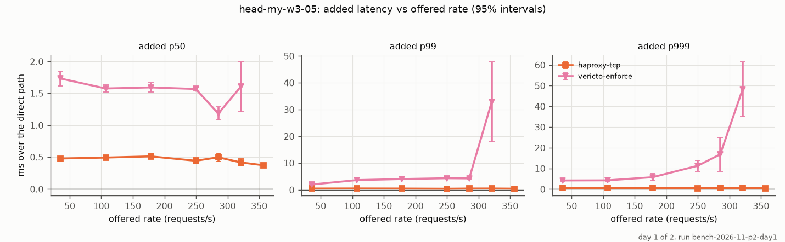
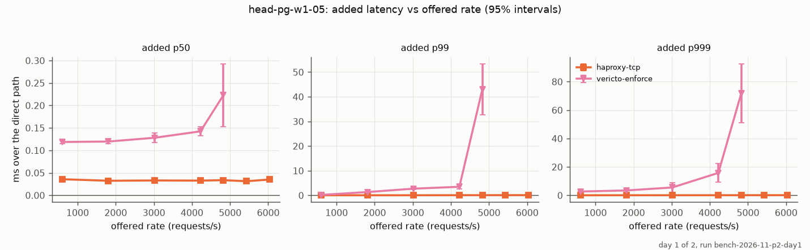
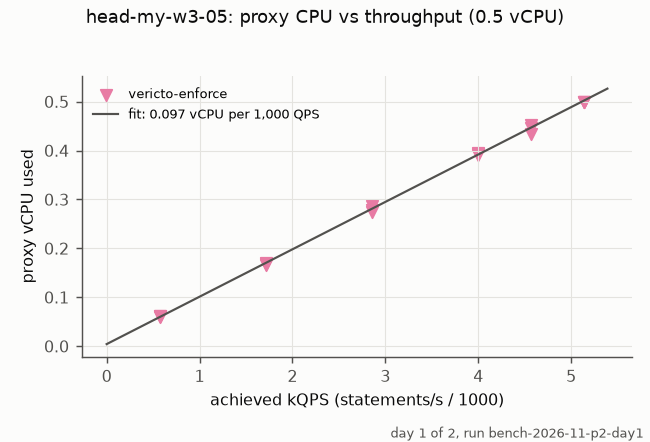
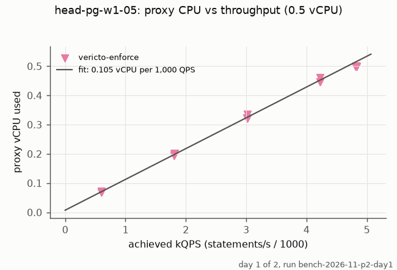
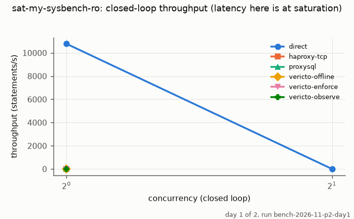
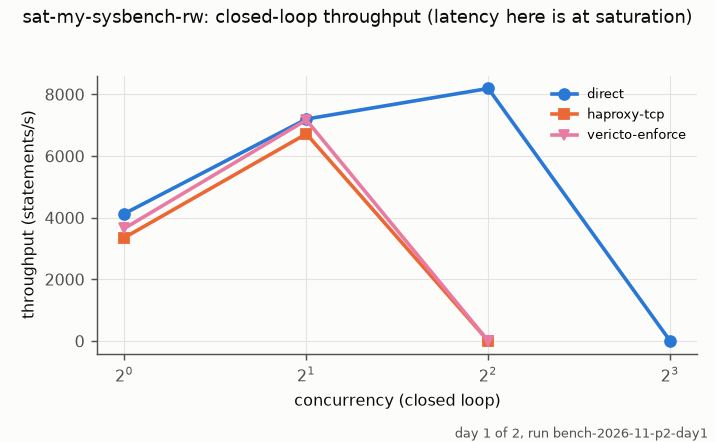
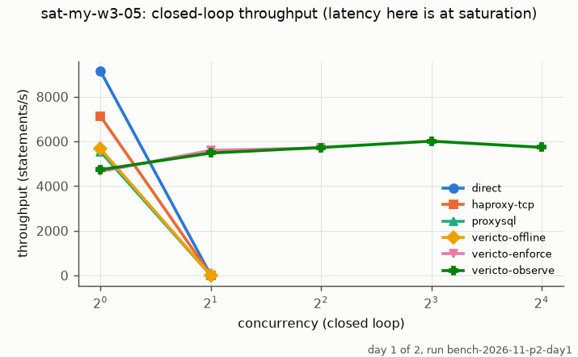
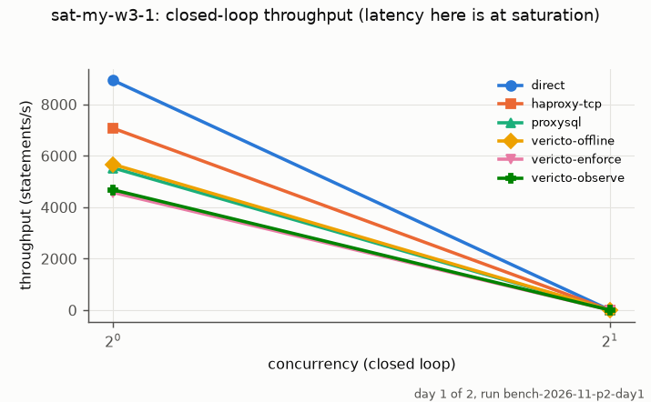
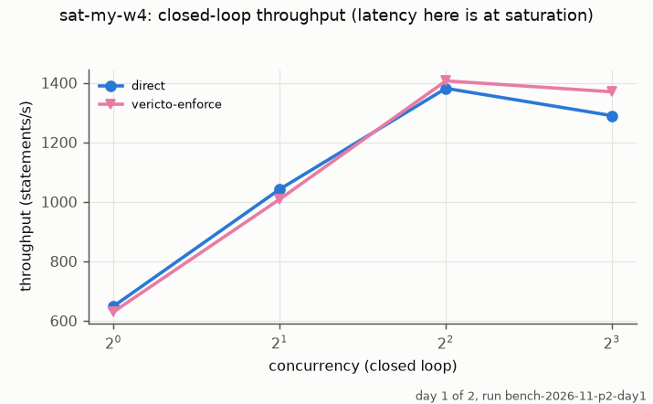
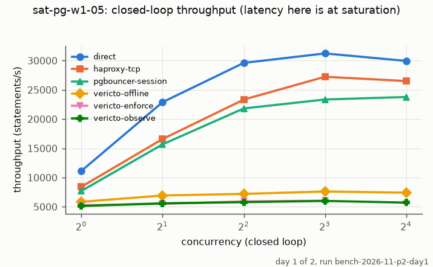
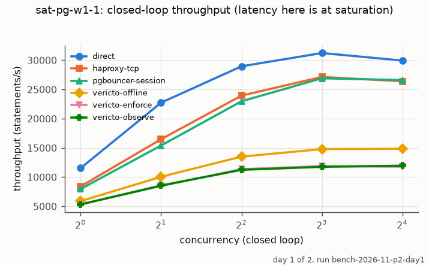
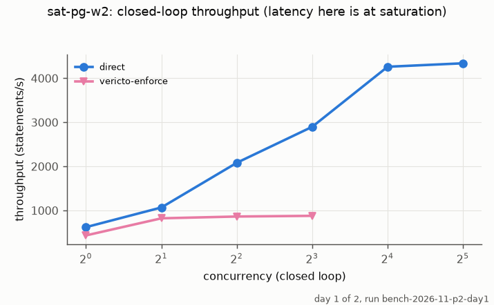
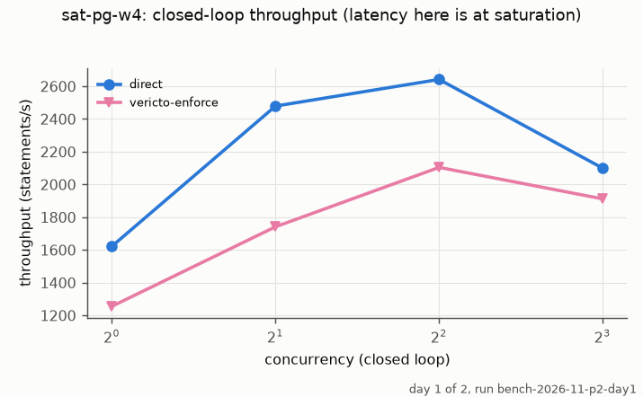
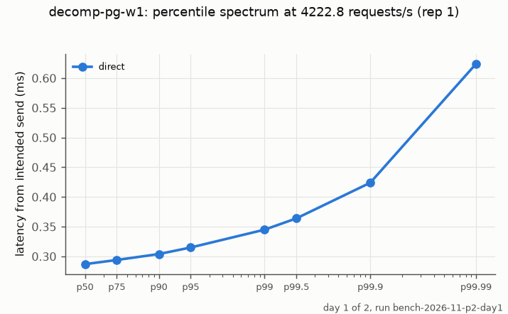
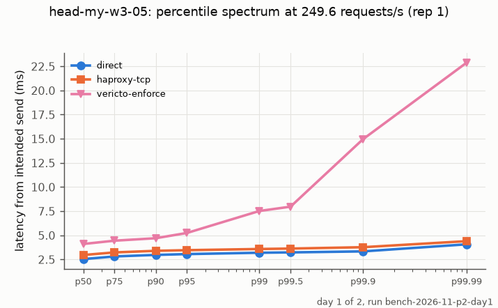
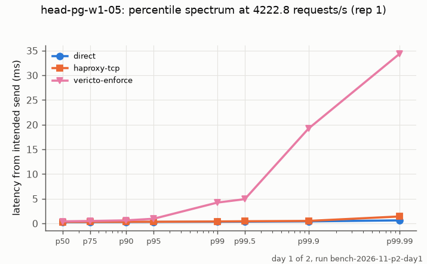
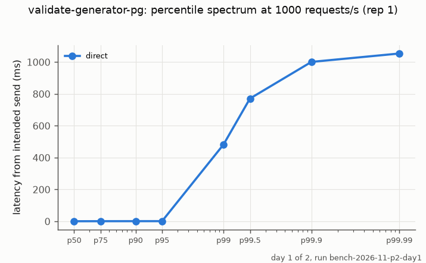
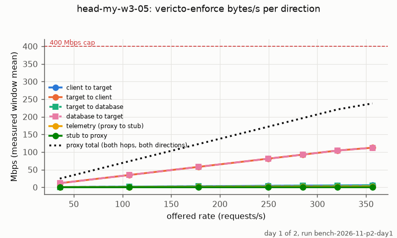
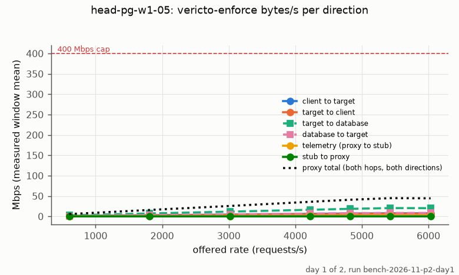